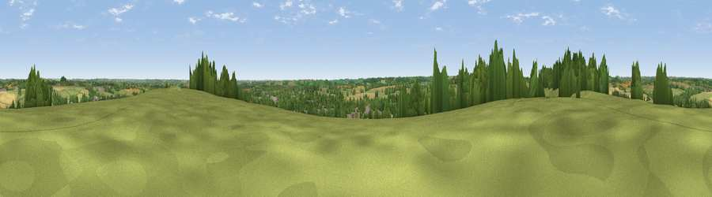

Viewpoint near Bloxham
#27094 in England · top 50% of its area beats it · near BloxhamThe view, rendered

A 360° render of this exact spot computed from the terrain model, tree cover and land cover — summer colours, afternoon light, calibrated against photographs of famous viewpoints. Real trees, hedges and buildings will differ in detail.
The panorama
Grey silhouette: terrain skyline in each direction (720 bearings, Earth curvature and refraction included). Dashed green: skyline with trees (+15 m) and buildings (+8 m) as obstacles. Blue strip: how far the ground is visible on each bearing.
Where the view opens
Wedge length = distance to the farthest visible ground on that bearing (vegetation-aware). Rings at 10, 25 and 50 km.
What fills the view
48% grassland · 31% cropland · 17% woodland · 3% built-up
Angular shares of the visible panorama (visual magnitude), not map area. Landscape diversity 0.49 (0–1 Shannon).
Key numbers
More beautiful places nearby
The staircase of upgrades: each row has a higher view potential than everything closer. Driving times are estimates from straight-line distance, calibrated against real road routing — check an actual route before setting out.
| Place | Direction | Drive | Score |
|---|---|---|---|
| Viewpoint near Milcombe | SW · 2 km | ~5 min | 49.2 |
| Crouch Hill | NNE · 3 km | ~8 min | 55.6 |
| Epwell Hill | NW · 9 km | ~17 min | 60.6 |
| Shenlow Hill | NW · 9 km | ~18 min | 65.9 |
| Viewpoint near Upper Tysoe | WNW · 10 km | ~19 min | 70.4 |
| Viewpoint near Radway | NNW · 13 km | ~23 min | 71.7 |
| Viewpoint near Ilmington | WNW · 22 km | ~37 min | 72.6 |
| Viewpoint near Meon Vale | WNW · 26 km | ~42 min | 77.0 |
52.02598, -1.38454 · source: screening · position refined by local search. Computed location — check access rights before visiting.